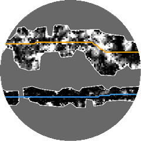

How to use
SLM can be opened by running the included .py script or .bat file. The latter automatically detects and uses the latest available version of Python. Upon opening one of these files the user should see a command prompt window as well as a graphical user interface (GUI; Figure 1).

There are currently four main categories of tools included in the SLM package: mapping, attribution, auxiliary and alternative. The two former are the main steps and the two latter are the optional steps outlined in Figure 1. Specific tool descriptions, inputs and outputs are outlined in the documentation section of this guide.
SLM tools require ESRI ArcGIS to be installed with the Spatial Analyst extension in order to run. ArcMap uses Python 2.7, which is compatible with SLM tools. ArcGIS Pro uses Python 3, which is also compatible and enables SLM to run approximately 20% faster.
Main Inputs
- Canopy height model (CHM) raster: high-resolution (pixel-size < 1m) CHM raster image, preferably derived from high density LiDAR or photogrammetry (>25 pts/m²), covering the area of interest.
- Regional-scale polylines: polyline shapefile delineating the seismic lines in the area of interest, digitized at a regional scale (1:5,000 to 1:20,000).
Main Outputs
- Center lines: detailed, corrected (according to the CHM) and attributed polylines at the center of the seismic line footprints.
- Footprint polygons: detailed areal footprint polygons of the seismic lines (approximately equivalent to 1:500 scale).

Line Attributes
Once mapped with SLM tools, seismic lines can receive attributes which relate to their spatial properties. Additional information may allow for greater insight on seismic line conditions. SLM provides a series of standard line attributes as well as the capability of deriving attributes from external data provided by the user. Table 1 provides some examples of standard attributes and a full list of currently supported attributes is available in the documentation section of this guide.
| Average Width | Sinuosity | Fragmentation | Micro-topography |
 |
 |
 |
 |
Mapping Workflow
- Step 1: Prepare input raster layers.
- Using the CHM raster as input, run the Canopy Cost Raster tool. The generated outputs will be used on all following steps.
- Step 2: Prepare input lines.
- Digitize regional-scale (1:5,000 to 1:20,000) input lines. Preferably use the Cost Raster generated on step one as reference. Then, run the Center Line tool.
- Step 3: Inspect center lines.
- Local canopy gaps, anomalies, and misplaced input lines may cause undesired deviations in the output center lines. If the center lines are appropriate upon inspection, move to Step 4. Otherwise, correct the input lines, adding vertices on a more detailed scale (1:2,000) to better guide the center lines towards the actual seismic line path, then re-run the Center Line tool. It is expected that, following the recommendations listed in the limitations section below, only minor corrections will be needed in this step.
- Step 4: Set up the least cost corridor threshold (LCCT).
- The LCCT attribute within the center lines will influence the width of the output footprint polygons and how far they can penetrate in the adjacent forest. If the forest composition and seismic line width is approximately homogeneous in the application area, then all lines may use the same value for the LCCT (default is 3.0 for 3D lines and 8.0 for 2D lines). Otherwise, the center lines will need to be attributed individually with appropriate corridor thresholds. This attribution can be done automatically using the Zonal Threshold tool. For improved threshold estimation, first the lines may be segmented according to input landscape feature polygons using the Split by Polygon tool. When the LCCT has been set up for all lines run the Line Footprint tool.
- Step 5: Inspect footprint polygons.
- Adjust LCCT of line segments as needed. Wide lines may need a threshold increase while narrow lines on sparsely vegetated terrain may need a decrease. This can be done manually for each line or automatically by fine-tuning the parameters of the Zonal Threshold tool. Certain segments may transition between forest types not captured in the input landscape features and may have to be segmented. Re-run the Line Footprint tool until results are satisfactory.
Limitations
- This tool does not work automatically on completely (80% to 100%) regenerated seismic lines.
- The SLM tool was designed to work on seismic lines, which are usually narrow corridors (up to 15 meters wide).
- The input lines and their vertices must be contained within the input raster and not overlap with null (no data) cells.
- Application areas with varying levels of tree density may require additional care.
- Water bodies (e.g.: rivers, ponds, lakes), cut-blocks and wide linear disturbances (e.g.: roads, pipelines) represent areas with extremely low tree density and may be confused as seismic line footprint.
- The least-cost path solution incorporated in this tool may occasionally choose to "cut-corners" on windy seismic lines with sparsely vegetated surroundings.
If a human interpreter is not able to see the footprint on the CHM it is likely that the SLM tool will also not be able to properly map it without fine-tuning. Regenerated seismic line segments can either be removed from the inputs or digitized on a smaller scale (adding more vertices, see step 3 in "Workflow").
SLM can also be used to map the footprint of wide linear features such as roads, pipelines and power-lines (up to 80 meters wide) but this requires fine-tuning the input parameters (usually with a larger corridor threshold, and sometimes including additional input lines to capture separate portions of the same feature).
On the other hand, null cells are useful to represent unmapped regions and should be used (as opposed to extreme numeric values such as -9999 or +9999) especially in case there are "data holes" in the input raster.
Landscape feature polygons (optional input listed above) may be used to split seismic lines via the included "Split by Polygon" tool, enabling improved results on terrain with varying tree density. The included "Zonal Threshold" tool can help with fine tuning individual line corridor thresholds (see step 5 in "Workflow" below) to prevent the footprint polygons from invading the surrounding forest in sparsely vegetated areas.
Therefore, to avoid this effect, seismic lines surrounding these features may have to be digitized on a smaller scale (1:2000), with more vertices than other input lines (see step 3 in "Workflow" below).
This effect is worse if the input lines are too large-scale (e.g.: 1:20,000). To avoid this issue such corners may have to be enforced with additional vertices (see step 3 in "Workflow" below). Note that this effect is expected to be minimal, and may not be reflected in the output polygons even though output lines are affected.
Multiprocessing
The scripts included in this toolset make use of multiprocessing to split the task of mapping and attributing lines into multiple parallel processes. This factor allows several CPU cores to work at once dramatically reducing the processing time on extensive application areas. By default the maximum number of available cores is used by the SLM. This is usually desirable to process large inputs faster, but may temporarily slow down other processes in the computer. If the user wishes to specify the number cores to be used by SLM tools they can find this option within the user interface.
Temporary Files
All subfolders within the Scripts folder are temporary workspaces. These are used to store temporary files which are automatically deleted upon the end of execution. While running SLM tools make sure that files in the temporary folders are not opened in ArcGIS, as this will place a "lock" in these files preventing them from being edited by the SLM. To make sure that there are no locks affecting the tools, clean the temporary folders or delete the folders themselves before running the SLM.